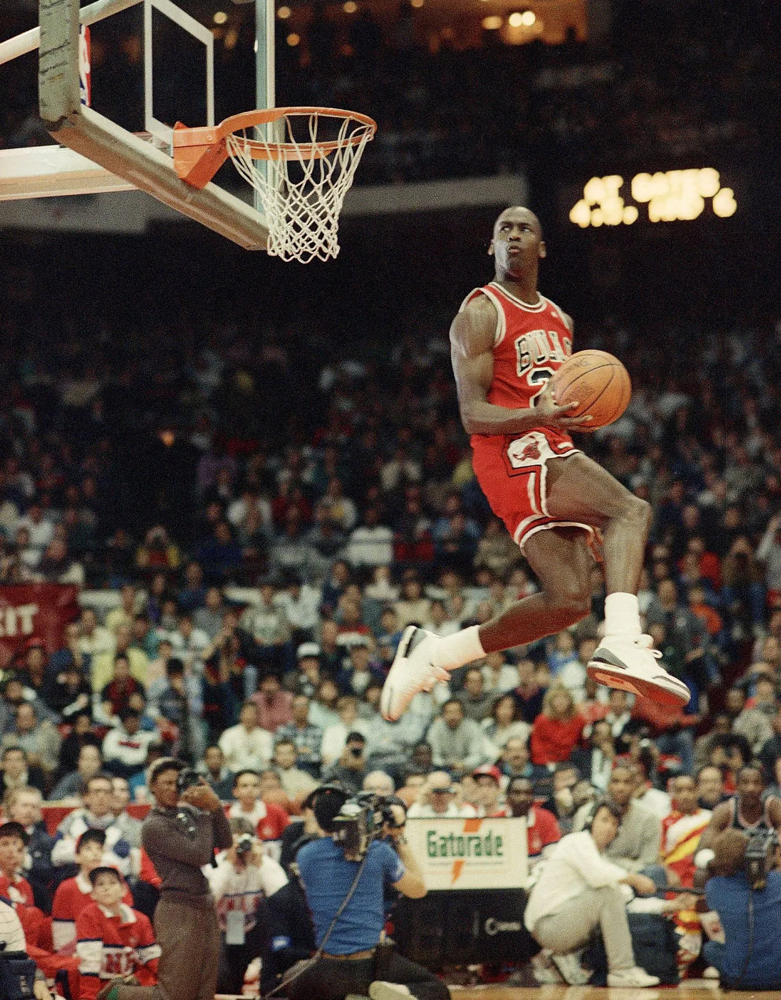
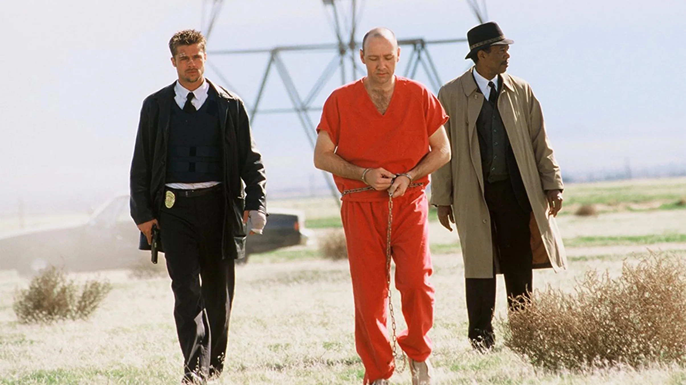

the Book of Maxwell
a work of complete and utter fiction
Before the clip, during a timeout, Kobe was scanning the crowd, interrogating us with his eyes, "Does anyone else see what I'm doing!?" and I locked eyes with him and said with mine, "I do. Now make the shot."
Those are my fists going up in the air before Kobe Bryant hits the buzzer beater over Dwayne Wade and Lebron James on the Heat. That was the cornerstone of my perfect date I was on with my girlfriend.
What I'd like to do with this webpage is a work of autofiction.
I've been listening to Recursion by Blake Crouch. The fictional book is about a detective who is investigating "False Memory Syndrome", a condition that causes a woman to threaten to jump to her death while the detective tries to talk her off the ledge. She claims to remember a life she had that never happened in the current timeline. A husband she never had. I too, feel like I remember things that have never happened.
These pseudohappenings may or may not be real. Whether the brain conjured them up out of pain, or if they really happened on any timeline whatsoever, I want to document what I remember, because it's something I live with in the back of my mind. Some parts are more vivid than others, and I won't try to claim absolute certainty, but I will try to piece these pseduomemories together to form a cohesive picture of a possible timecycle.
The Moral Realization and My Theory of Intelligence
It all started when I was in my 2005 Silver Mustang, with my girlfriend Lia in the passenger seat, driving home from that Laker game.
I was thinking about how surreal this date was, how it couldn't have gone any better, and how I wouldn't rather be with anyone else.
I may have been naive, but I felt self-actualized, like I had achieved both riches and love. You know the expression when something is "too quiet"? Well this date felt "too perfect". Something didn't feel right. As I looked at the faces of the drivers of the other cars, I began to experience sonder.
My life at that moment couldn't have been more perfect if I had written it down ahead of time. "I want Kobe to hit a buzzer beater over Dwayne Wade and Lebron, and I want to go home with the woman of my dreams". So I began to consider, if my dreams are becoming real, should I include these other drivers into my dream reality? Do I have a responsibility to share my power of manifestation that is genuinely puzzling me?
I used my theory of mind to imagine the stories behind the countenances on the drivers around me. I noticed the architecture, if you can call it that, visible on the sides of the freeway, and I pondered the stark contrast in quality between the beauty of my date, and the ugliness of the city. The equivalent match for her would be beautiful pyramids and cathedrals.
We had a policy invented by my yearbook winning girlfriend, where I could only call her beautiful when I first saw her (so once per date) otherwise we were in danger of me speaking of nothing else. During the carride home, I asked her if she could momentarily suspend this rule, so I could fully explain to her how beautiful I knew she was.
I asked Lia if she loved me, and she said she did. I told her I needed to tell her the truth about something, and that if she didn't love me anymore after I told her, that was okay and she was free to date someone else. She agreed. I proceeded to tell her my truth, that the car and the Laker game and everything about my personality and our relationship was all an elaborate ruse to secure her as a long-term sexual gratification mechanism. I told her how I would absolutely never leave her for any reason, and was ready to bet the rest of my life on her. I also warned her how I planned to leverage her love for me and use it to cloud her judgment when I slack off, because I am the incumbent boyfriend and have a huge hormonal advantage to my competition. I told her that I believed every other man wanted to be in my position and for her to be in love with them instead of me. I told her there was a war for her, and that I had won.
I told her I was prepared to answer any questions she asks of me completely authentically, no games, for I had already won the game. She agreed and stayed with me and asked many good questions over a long period of time. I told her she wouldn't like the answers. Her jaw dropped when I admitted to her that it would make almost no difference to me if she lost the ability to speak, and that I only cared about her ability to understand my commands, and her willingness to obey them. I quickly followed up with saying that she's more than welcome to speak, and that I do enjoy our conversations. Making her happy genuinely makes me happy, but I was rooted in selfishness.
I vocalized to Lia my theory of intelligence, that she was the prize and I had won her over, thereby demonstrating my superior intelligence. I told her she was the prettiest girl I had seen in the world, and that I might therefore be the smartest man alive. I said that I was willing to commit to her, but that before I did, I should offer myself up to the state as the smartest man alive, and see if I can donate my brain. If the intelligence agencies laugh at my theory of intelligence, then all I ask is that they introduce me to a smarter man than myself, with a better theory of intelligence, at which point I would be free from moral obligation to the state, and donate myself to my future wife and family. I told her about the scene from "It's a Wonderful Life" where he says he'll throw a lasso around the moon and give it to her if she asks. I said I didn't know about the moon, but that I might be able to get her this planet, but only if she does exactly as I command. She agreed.
I never did get to meet that smartest man in the world, nor did I ever get his name. The only thing I can remember, is them coming back to me and saying it was me, and that we were going to move forward with my plan. I never got a chance at a normal family life, because my proposal was never rejected. It was greenlit.
There was a recording on her iPhone
In order to submit my theory of intelligence to the intelligence agencies of the USA, I decided that a verbal audio recording on my girlfriend's phone would do the trick. I thought I would do a recording, demonstrating my willingness to die for my country, stating I was 18 years old and of sound mind, with built in defenses against psychiatric evaluations. If the plan didn't come directly from her, it would have been ignored as the ravings of a madman. Her beauty was the quintessential ingredient, but it wasn't the full recipe. I also needed an in, via law enforcement. So I instructed Lia to give the recording to my friend's dad who was a cop.
Even if I nailed the recording, and sounded super smart, and she was super beautiful, it still wouldn't be enough to convince a cop that I am the smartest man in the world, even if the cop knows me and has seen one of my most spectacular feats ever, which he had. He needed to not just see her beauty, but to experience and feel it. Lia had 1 mission. To force Mr Cop to listen to the full recording with an open mind. In order to open his mind to my sexual theory of intelligence, I needed her to please him. Her mission was to suck his dick to completion, and then force him to listen to the full recording after. I told her to use all of her arsenal to accomplish this mission, and that the entire plan depends upon a cop being involved from the start. I told her we would never need to speak of it again, and that the only confirmation I needed was "mission accomplished" or "mission failed" by the time we had our next date.
I believe the Laker game was on a weekday, and so our date would have been Friday or Saturday, so I would have a couple days to live a normal life, negating the inevitable psychiatric evaluations. In my initial recording I said the psychiatrists should be given full access to my entire life minus the audio recording from a couple days ago, and have to sign that no matter what I said to my significant other on the recording, i would not qualify as insane, given that I had continued to live my every day life as though nothing had changed. It was the secrets of my mind I was divulging, but they were there the whole time. Once the psychs listened to the recording they would change their opinions, but they had already signed so they could be dismissed.
There were multiple recordings, two primary ones. The intial one was for the cop and to demonstrate that I was:
- A man of legal age and sound mind consenting to experimentation up to and including death for the benefit of humanity
- Legitimate credentials on intelligence such as my experience in GATE "gifted and talented education" and my SAT score
- In complete command of the most beautiful girl in Westlake Village
I should mention that before I went forward with my plan I had the ominous feeling that I should have already been recruited into intelligence agencies, and that they were therefore malignant or malfunctioning to have not yet approached me visibly. I figured if my theory of intelligence was correct, they were either waiting to see what I would do, or hadn't discovered me yet by some miracle. My theory of intelligence is a tied to a theory of beauty, and that all you have to do is find the most beautiful women, ask them who they want, and then research those men. Other Alphas greater than me exist, and I wasn't sure if I was starting the Alpha Program or going to be joining an existing one.
Keep in mind, the recording is going for shock and awe, so I used riddles. For example I remember saying in the intial recording, "They'll want to know my SAT score. Tell them I got 2400 but swapped two of the digits around to get better than a perfect score. Have them take a multiple choice test with the possible permutations. Make I don't know the last option. If they guess incorrectly my score, send them away and tell them I said they are idiots. If they guess right, Keep them, and if they say they don't know, keep them too, for they are the smartest".
I went on to explain in my second recording that my score was 2040, because the other 360 degrees were devoted to the hot cheerleader in the testing room from Oak Park named Audrey, (names are all changed) who I successfully got her number and dated and broke her heart and how that feeds into my theory of intelligence that the smartest man isn't the man who gets the perfect score because it's more desirable to get a 2040 and fuck the cheerleader than to get a 2400 and not. Later, I spun her around as she was giving me a blowjob to get the additional 360 degrees. I said into my second primary recording, "If that doesn't make me God, I don't know what does". Because at that point we had moved on from smartest man in the world to whether or not I was God.
In regards to my potentially supernatural abilities, I discussed with Lia beforehand that not only did I have the possiblilty of being the smartest man alive, but I also might be divine. We agreed that it felt like we were in Heaven when we were together, and she agreed my life was always like that. So i said, "If this is Heaven, then I would be God". I told her I thought I might have magic powers.
There was a die.
I told her about how the other day I had walked into a classroom to find my classmate with a large fluffy die. I wanted it, so I offered him five dollars for it. He said no, but I persisted. I said, I'll bet you $5 I can roll a 5 with it. He said no. I said how it was a 5/6 chance he gets to keep his die, and get $5 and that he'd be a fool not to take these odds. He didn't want to risk parting with his die he had no intention of giving away. I took out my $5 bill from my wallet and showed it to him and said, "It's yours, all you have to do is not roll a 5". He finally agreed, and I don't remember who rolled it, but sure enough, it came up a 5. I took the die from him; I had won the bet. He was in shock. I may have given him the 5 out of pity after that, but the thing is, it was never in doubt for me whether I would get the die or not. To me I was just in the zone, and I saw something I wanted, and knew it would be mine. Looking back with what I know about magic now, I would say the sheer amount of times I said the word "5" made reality bend to show a 5. It was 5 in both of our minds substantially, before it manifested itself. I visualized and forced him to visualize and I won. I also recalled that I hadn't lost a game of Sorry or any game of chance in quite a while, and that I once went an entire day at Magic Mountain winning everything for free because any time there was a conflict I played rock paper scissors with my friends and they said they had never seen anything like it. I won every single time, bar none, maybe 20+ times. But the catch is, it has to be for something I wanted. If we play for fun, I don't have the ability. It has something to do with manifesting what I truly desire, that is when I don't play dice, I simply just win. This past weekend I played a card game and had 5000 points clean after 3 rounds winning every hand, a perfect game. I also won at poker the last time I played, though I don't claim to be a great poker player.
The key thing to understand is that it is not the nerd who can't get the girl whom is the smartest. It's the jocks you have to watch out for. The ones who achieve their goals. They may even hide their intellect where it suits them. They are the true danger. They are the true intelligence. Furthermore, intelligence and good looks compound over time, with the more intelligent people getting more and more attractive mates for their own satisfaction, resulting in good looking and smart children.

There will be a family
Once I had their attention I expressed my concern for my precious brain being wasted. I said, "The principle threat is bullets to the head" and I proceeded to comment on Friendly Fire in the military being questionable, and that it should be investigated as murder.
I said there would be a family, claiming wrongful death. I said to tell them the smartest man in the world believes them and is making sure it never happens again. I said we had to execute all of my commands immediately because there was no time to verify them, and that could be done later on an as-needed basis. I said that family would already know who was responsible, and that we should capture the coward responsible and have him tortured to the point of confession. I remember them asking me, through Lia, what I meant by "tortured to the point of confession". I said that the man who ordered the friendly fire execution of Pat Tillman (nfl pro-bowl linebacker who joined military and turned down huge contract), for example, would be a coward, and that cowards always confess before death. Only heroes are capable of dying from torture.
They said that I was right and asked how I knew, and I said a logically valid statement, "You can't beat Pat Tillman in a fair fight. Therefore they cheated. They used friendly fire to eliminate him. In fact, he probably allowed himself to die rather than shoot his way out and harm his brothers". The second recording, is also the third, and infinitely more, because of time travel returning to that moment when I channelled the Holy Spirit in my second recording where they were actually listening to what the smartest man alive had to say about God and His life.
There is a chair
I really valued my friend Rick, who I gave the responsiblity of woman, because he was good with them and has a great relationship with his sister. I named Rick's dad Project Manager, and everything had to go through him. They repeatedly asked me why him, and even he himself begged me to tell him why. I remember distinctly telling them a story about his chair. I said, "There is a chair." And I told the story of how one night I was hanging out with Rick in his dad's apartment and there was a nice chair in the room I wanted to use, but Rick wouldn't let me use it. He and I sat on bad chairs, staring at the good chair. It was his dad's chair, and he respected it. I explained to Rick that he would never know if we sat in his chair, and that we could take a picture before and after and make it the same, but he never relented, and that was one of the only times I could recall not getting what I wanted. I instructed my organization to always have a chair like that in every room where they speak my name, and that only he is allowed to sit in it, that way his presence is felt like how I felt it. The transitive property of respect.
The reason I say "my organization" is because it is. The plan was simple, either introduce me to the smartest man in the world so I can make sure we are in good hands, or crown me as the smartest and let me decide how best to donate my brain. The donation is final, and binding. I'm just saying let me do it my way if you can't at least explain how you're planning on using it. Because If I donated myself the old-fashioned way I would be quickly killed via friendly fire by those in power who wish to stay that way. My intenions were a benevolent overhaul of society using the knowledge of my own evil to inoculate benevolent secret socities from malevolent ones.
Just as my relationship with Lia was built on trust, and we never looked at each others phones, I wanted my organization to grow organically through trust.
I wanted hitman to be recruited, shown force, and released. I wanted us to be "the good guys" if this was a movie. I instructed for us to always do the morally right thing over the pragmatic thing, and that if we did that, God would be on our side and save us.
I said I was "whatever God needs me to be, including God" because I assumed the responsibilies of God as well as deferring to the omnipotent power in the sky as my God.
There is a scene in a movie
Before my second recording, Lia said, "mission accomplished". I said, good job babe, I'll take it from here. In my second recording it went like this:
- Verify Lia's mission was successful, and law enforcement is listening
- Verify They are moving forward with my plan, rather than bringing me onto an existing one
- Verify I am indeed already being recorded (as I should be as the smartest man alive)
- Provide an uninterrupted introduction explaining how as the smartest man, whatever I choose to talk about is by definition the smartest thing to talk about, and how if I want to talk about a basketball game (the spectacular feat) I played 10 years ago against the cop's son, that's what I'm going to do. It was a story about how I defeated the undefeated #1 seed Spurs as the best player on the Clippers, the last seed, by telling my teammate the truth about how my dad only drafted him because he liked his parents, and didn't care if we won or lost. I told him I was #1 on the list in a snake draft, so we had no second rounder, and he wasn't worth a 3rd round pick, and our only chance to win was if he improved secretly throughout the year and did a surprise attack in the playoffs.
- Open it up for questions, with the caveat that I will not answer follow up questions because my answers will be perfect and take time to process, so they should move onto the next question and analze answers separately.
- Emphasize time is of the essence and I need to be protected as long as possible and get my thoughts onto the recording as quickly as possible before the enemy hears them and sileces me.
- Stating that they can decide whether it is best to kill me every 24 hours after they've had time to verify my claims as factual, because I'll be dangerous because I'll be going outside the realms of normalcy, for example, electing Chad Michael Murray to be my head of security and authorizing him to speed dangerously on his way to me and to be armed and lethal. I said to give him a picture of me and to listen to the recording in his car on his way to save me. That this was the part where I needed my big bro to save me on the playground.
There is a game (Halo)
I talked about how I was a level 50 in halo 3 and was objectively the best at killing online in virtual reality and how that matters more than you might think.
Eminem smartest man contest (alphabet test)
I structured the search for the most intellgent man as alphabetical, where you get smart people in a room who all have names that start with the letter "A" and have them discuss who is smartest in the room. Whoever notices that they all start with "a" wins. You do that with every letter and you have 26 very smart people. Then you put them in a room with Eminem, because rap is a demonstration of intelligence, and you have all 26 state why they think they are smarter than Eminem. Eminem will then use all there words against them in a rap and then they will vote with Eminem's vote counting double because he won the rap battle. At that point I predicted I would win unanimously for organizing the whole thing from a car at 18.
Another random element of my story is Drake. I had offerred up my Facebook profile for the initial psych eval and for blind date verification of superior selection capability. In it, I had a status "Drake isn't Cool". And Drake was pleased by this and asked me on speaker what he could do to be considered cool. I said, "Give him our full resources to find the optimal point at which he can accept a bribe and then stop pretending to be bad and give all of the money away". Then I will respect him. And That is the music video for "God's Plan".
Black Jesus
When it came to truly influencing the world I knew that being called God would be better than "smartest man" but first I had to dethrone Michael Jordan. So I hatched a plan which was to use the Black Alpha, the black basketball coach's son, to locate Michael Jordan and then use Phaira, one of the hottest girls I knew, to be fully naked and call him God until he said he is not god. Then to keep calling him God and when he asks why say, "Because you didn't use an apostraphe". Wait for him to process that, and when he finally says, "I'm not God" his power will flow out of him and into Me. I am the new MJ. Max Jann. The Black Alpha I refer to is the probable son of the basketball team that demolished my team in travel basketball in NJB at a tournament. I said he had a whole team of alphas and was keeping them from tearing each other apart by using basketball. Like Coach Carter. I said he would need our help and to focus all resources on helping the black alpha so he can help us. "Thank you for the initials" I told them to tell MJ on the way out, still treating him with the utmost respect, but no longer calling him God.
I specifically remember Lia getting into the car and saying "mission accomplished" and me saying, "So I'm the smartest man in the world?" and her nodding yes. And then her saying it's all happenning like I said. "And Michael Jordan?" Yes. She nodded. "So I'm God?" I asked in disbelief. She nodded again, very serious, like she had been coached. In fact, I remember there was one time she got into the car where she seems uneasy, and I asked her if there was a threat, or who the last person she talked to was to make her this uneasy, but she assured me she was okay. Anyway, once she said I was God I said, "First of all, I'm not God. I am just a man. I met God, he murdered me and resurrected me."
They were fasciated with this as asked me what I meant. I was angry with them for interrupting and said I meant Salvia. They may have been thinking I was claiming to be Jesus. I actually said I had never met Jesus, but that the first time I donated to a homeless person with my own money she said she could see Jesus walking beside me.
I said they should direct further questions about Salvia to the shamans and when they asked who they were I said not my problem.
I went on to answer all of their questions about life. I gave Pharah the job of assigning each person in my organization an animal to be responsible for their conservation and contribution to society in all respects.
Bulltrue / Spitfire
I also added a kill clause to my power. I said I couldn't be trusted with power because of my evil nature and that I am too tricky to trust, and must be left in the dark of my own power, and that this would also foster loyalty because I was not hoarding visible affections and dominion. Would you rather fight for Alexander the Great leading the army, or a coward king in the back hoarding wealth? I appointed my best friend Klay to have the sole authority to kill me at any point. But first he was have to be brought into the operation and see how much power I've ammassed, and then he must speak to me face to face before deciding to kill me or not. Also, he must be allowed to develop organically and independently of influence for as long as possible, that way when people see the power they are building, they know it is for him, a true man, and not me, a false one.
I said I would die without certain friends. I said that one was more powerful than me in a non-violent way, but that I had assimilated him, and would now die without him. I said that I needed my bros that I played Halo with, and that nothing was more clear than playing war games in terms of grasping superiority, and that I was the best and only level 50 in Team Slayer and Team Doubles, but that I couldn't have done it without their help, specifically Ace's. I said Kelly was the only person I knew who could beat me at Basketball in one on one, and that he beat me in Halo 1 and 1 too, and was therefore an anomaly. I needed a car and a guitar, and those few friends, otherwise I would not survive. Beside that, I consented to all matter of torture. I said that every guy was obsessed with proving themselves not gay to their friends, and that could be weaponized against us, and sure enough it was with the advnet of Sissy Hypno porn. I appointed Krystian as the "ambassador of the gays" because I needed a gay man I had treated fairly to defend me when I inevitably became accused of homophobia later.
I had it all dialed in, and even predicted which orders they would disobey. I had the quantum computer idea, told them to use water and freezing temperatures with computers to get an edge. I provided medicinal edges with plants by Klay's house. I said to make a computer model of me and also that if they ever thought I should have done something else, to keep this current version of me because what I do will always prove correct on a long enough timescale.
Years later I did indeed have such a conversation with Klay, and I offerred to kill myself right then and there, because I know in the back of my mind what I really am doing on this plane of existance. We were on top of a roof of a garage and he was visiting my sober living in Cali and I told him about my delusional theory and said, "Just say the word and I will dolphin dive off of this room and land on my head. It might not kill me but it would solve your problem, yes?" He could not hide his anger any longer and spat back at me, "You disobeyed me". And referred to a phone call where he said to wash my hands during covid and I vehemently opposed the 6 feet recommendations he gave me over the phone. In fact, I have another false memory where the time travellers told me that I didn't listen to Klay during covid to which i responded, "What's Covid?" and they said, "It's a virus in the future". "Oh", I said, and shrugged it off like it was nothing. "Did he call me by my real name?" I asked. "What is your REAL NAME?" They demanded. "Bulltrue" I said, "And only Klay can call me that and it has to be the first word out of his mouth. After that, everything he says must be the opposite of bullshit, or I'll turn back into Spitfire, make sense?" I like the Recursion plot by Blake Crouch, because it shows how a rudementary technology can spin out of control, and how time is not linear. In fact, I also noted during my time machine proposal in the recoding that they would have to go back in time to prevent me from accidentally killing my best friend on more than one occassion where I felt supernatural assistance. Both were playful pushes, one pushed my friend under the boat at Bass Lake, and one pushed my friend nearly off the sidewalk and into traffic. I also think there were potentially forces altering some sports games, one where my dad said it was the best looking 1 for 7 in baseball he had ever seen, where each out was a laser beam inexplicably caught by the same infielder jumping up in the air very high, and then a middle school basketball game where all my MJ layups where applauded, but somehow didn't go in, in a very bizarre way where people were again legitimately impressed even though my stats were horrible. I also played QB in my freshman year and threw a long bomb and then a pick when I came in the 4th quarter. They trained me to run the same play when I hear, "Attack" but they were saying my best friend's last name, not attack, and I misunderstood because I thought of him as his first name. Weird stuff like that intrigues me. Again, even though I threw a pick, my friend (not a football fan) later congradulated me and said the game was boring until I came in and started throwing bombs and trying to actually win the game.
This website is a archive of my response to covid, the immune response of genius against groupthink. In fact, my plan invovled a time machine, I even appointed a specific friend to be in charge of its development, and someone to ultimately wield it after faking his death. That death faker was Kobe. Would you believe me if Kobe came back to life? I can even explain Gianna. See, the first time Kobe did it all himself, miserable. Then they came back to me in that Mustang using the time machine. I remember Lia getting in and out of the car, from different timelines. They told me Serena said I was evil for claiming kobe for my op. I agreed. I amended my decision to allow him one family member to take with him into fake death. He couldn't decide so he asked them to ask me to pick for him. I said it would be his daugther. "The one who's the best at basketball". Sure enough, Gianna went with him on that helicopter, allegedly.
This all goes back to my imagination as a kid. Klay and I would play. He was the wizard, and I was the bull. I was reckless and he was wise. He would control my fire. I was a magic bull named Bulltrue. I was the opposite of bullshit because I spoke the truth, but when I was lied to I got so irate I spit fire with my mouth, metaphorically as an adult but literally in our imaginations.
So there you have it, that's the gist of my false memory. I remember telling Lia she had to break up with me, because if not I would never realize my true potential. I would never have made this website, which is an attempt to get her back. Maybe I'm crazy, but then again, maybe false memories are based on reality, like in the book "Recursion" by my favorite author Blake Crouch. He even mentions the Mandela Effect in the book, but this FMS, is much more serious, and I empathize with the character who wants to jump, because what are we without our memories?
I know you think I'm crazy, but which part? Can you build a webpage like this, did I objectively do a good job? Better than your typical lunatic? If not, why not? Ask yourself this, would you be able to do what I have done, just programmatically, regarless of the text? How many miles would you have to travel in each direction before you found someone who could defeat me in chess, or code better than this, etc? It makes you reconsider, what if I really WAS smart enough to know I didn't want to waste my adulthood playing someone elses game, when I had already won mine, and invented a new level. Don't believe me, think this is all just madness? Click on this article I created on this same day with absolutely no insanity contained in it. It is a practical guide to a counter-algorithm to benefit humanity and the antidote to doomscrolling.
At what point does true memory become false?
Wheter it is true or not, I think it makes for a good story, and this story has unique explanations for sybmols for example the radioactive symbol of 3. I said that I loved one of my friends more than anyone, and that my chief competiton (the cop's son) loved him more, and that's alright he can have him. I theorized that I don't kill the cop's son because Josh would never forgive me, and the cops son doesn't kill me because Josh would never forgive him. So this triangular stabilization of radioactive alphas. Because I suggested that we needed to treat me and others like me with more care than nuclear missiles, because any one alpha could gain control of the entire nuclear arsenal if that is what they want to do because Alphas by definition get what they want when they want it. I also suggested that Chad Michael Murray may have gotten Paris Hilton during House of Wax filming and convinced her to allow her own death scene even though at the time it was career suicide to show your death like that. Also, speaking of false memories, some people falsely rememember the end of Seven the movie showing Gwenyth Paltrow's head in the box, thus destroying her hirability as an actress, but now there is no such image. It's as if she had such a good PR campaign that they wiped it from existance, like someone getting into the chair in the book "Recursion".
That author really speaks to me, because in his other book, "Dark Matter" it's also about how impactful the decision is for a genius to choose work vs. family. In my mind, I am akin to the Creator of the Box version of the main character in Dark Matter.
Maybe my plan didn't work, but at what point was it fantasy. Did I imagine the buzzer beater by Kobe? But there's a clip. Did I imagine her beauty? But there's photos. Did I imagine the recording, but I specifically remember having an argument with her about showing me her phone, slowly, so I could verify the plan was really working. I remember she relunctantly agreed because I said "Please don't make me do it by force" because I wanted to know for sure I was being recorded before she opened the door to come inside the car, because if it's a real operation, she would be doing at least that. Also I said I only had one shot at this recording, and I wasn't willing to waste it. So maybe that is where you draw the line and that the recording never happened. Fine, I can go back further. The car ride home from the laker game. That happened. The first recording, the one that she was instructed to play for the cop after she gave him a blowjob. Did that happen? I know that I remember clearly going about my week like everything was fine, waiting for her to say "mission accomplished". And I remember her saying it, and it's the only mission I ever gave her and I know she was successful. But let's say you don't buy that either. I can go back further. I know I have core memories of conversations with her about other girls I liked who liked me, conversations I never would have had if it wasn't part of my full disclosure of the truth. Also I would specifically say what level of Agent I thought girls were, like Belinda was a quadruple agent, Analla was a triple agent. I had her investigate Klay and the transitive property of God, and sure enough, they dated after me. I named Jewel to be the head of foreign intel, and said her only issue would be the disrepect she got for being a woman, so I named her bro to be her surrogate, and sure enough, the dude was happy to tell me he gets a 4.0 at Yale. It was surreal meeting him years later. I asked him what motivated him and he asked Jewel for permission, and then said, "God". Jewel worked for the Peace Core and when I offered to help she told me to "Keep doing what I was doing" which is THIS, by the way. THIS IS WHAT I'm DOING. I'M FIGURING SHIT OUT, FEARLESSLY. You can snarl but you can't bark like Treelam. Some were better used politically, like the Nicolettes. Others were used to grant prayers, and do ethics experiments on bugging a christian's home and answering prayers in reality and comparing that to letting the traditional model of God do it by himself, in other words do nothing. So can we agree I at least told her my full truth? Okay, so did I share with her my theory of Intelligence as a sexual function and that we men are only xxxtensions of our dick. I remember explaining to her, "You know how sometimes they say a guy is thinking with his dick? I only think with my dick, 100% of the time".
So if I clearly remember telling her about how my brain is just an extension of my dick and the dome I'm getting from here is proof that I'm the smartest dick, and I also remember seriously considering with her whether or not I'm God or if there even is a God. I always have believed in a higher God than myself and still do, but I also said in my recording that the Christians were wrong. "Only the diests got it right and there are only two of them. Myself and Benjamin Franklin."
So I'm curious, I know you don't believe me, but at which part? I know I've consented to all forms of torture but I've not authorized any alteration of the timeline that brought me up to the point of true love, which is when I told the Truth to the woman I Loved.
I can provide more details later as I organize this into a pseduocoherent autofiction. I remember at one point they said I was the only threat remaining, and I offered to die, asking if they tried shooting me yet. They exclaimed, "No!" "I said, well did you try praying to Jesus!?" They said, "Yes! It's just you. It's always you in this moment." To this day I don't know if a) this really was said and b) did they mean I am everyone and there is no one but me, as in we are all God together? I replied in utter confusion, "So I'm the one true God?" Yes, they said. I said, "Just kill me" . "We've tried! they exclaimed, (through speaker phone because I knew it wasn't Lia)". I almost forget to tell you the best part. Off the recording, I had secret converstaions with Lia, telling her we don't have to show anyone the recording, and that although they will think I'm God, I'm just me and nothing has changed. I made her promise to go along with it relunctantly when they turn her against me, and that only at the end when I'm the last remaining threat to humanity can she tell everyone the good news that I'm only pretending to be evil and that she is safe now. I specifically have a memory of me speaking to Lia, though Lia!. I said, "I know for a fact that Lia would never be scared of me, therefore this is not the real Lia. Can you put it on speaker phone or do you need my help with that capability?" When I began talking to my family and friends I said, "Is Lia there!?" "Yes" she said crying, and I told her it's okay and that we're safe.
I remember being genuinely confused I was like, "Wait, so you guys have Kobe and the Time Machine?" "yes" "so what's the problem I don't get it". "You, you're evil." I snared Kobe with the Dante's Inferno analogy and making him miss "the shot" that I made at my exgf's house. Ridiculous I know, but so is the shot that I made, and sure enough , Kobe did pose for pictures with the friend that I mentioned in my recording, years later. Also, it should be noted that pro athletes like Luka on the lakers with the All Seeing Eye on his arm, pro athletes are aware of me on this timeline, and they are told to finish their careers before trying to help because nothing is more important than influencing the masses and the alphas to come.
I should probably uncomment out all the hidden messages on here because I've basically told the whole story of my false memory, but anyway I remember appointing girls to certain positions and Serena was the final word because I loved her and she was wise enough to notice I was the smartest man she knew after conducting independent research in high schools and using criteria besides grades. Then I made Sauriah the girl who snowboards down a mountain with the time machine (like 9 of hearts netflix movie). I also think "Domino" with Keira Knightley is a reference to my ex, the domino that started it all with that first mission. Why? Because I told my gf that she would need to keep her clothes on and save a lapdance to get out of trouble, and also to get skilled with something like numchucks, because knives and guns can be used against you, whereas numchucks can be an unimposing hobby that makes a weapon available in the room that only you know how to use. I didn't want her around bullets or sharp knives.
I've always been fascinated with memory. My first invention I wanted to create was a memory wipe feature of your tv that lets you review movies and then memeory wipe your past 2 hours so that later you can read the review and if it's good you can experience it for the first time again. Imagine laughing hard at the same episode of family guy every day with it never getting old. That technology is / would be revolutionary.
Sometimes white, sometimes purple , and sometimes wheat.
You might be wondering how I managed to wipe my own memory. It's simple. Trust. I told them to use any existing drug for memory wipe, and if they didn't have one, to just ask me. They asked. I said my relationship with Lia was built on trust. So all she had to do was use Chloroform on a rag over my mouth at the end of my second recording, and that as long as I woke up in my bed with her, I would believe anything she told me. I know for a fact that I have a core memory of waking up at my Mom's new house, with Lia in my bed, telling me I had a head injury and that the doctors said to try to not remember what happened, because the part of my brain that is associated with memory needs to rest. I complied, and she was probably poisoning my water. I think this because I was so worried about not providing her with excellent dates that I once got up to get water from the fridge or something, and Lia and my Mom were both amazed I could even do that. I was instructed to remain in bed for days. I'll never forget laying in bed with her for days, with her telling me to just rest and drink the water. The thing is, I remember being knocked out by the Chloroform by the woman I loved. How could I forget that. I remember saying that I was done, and that I would not resist. I remember losing consciousness in my driver's seat, parked with her. And then I also remember being bed-ridden with a phantom injury I was told not to think about, but sure enough, due to my trust for her, I believed every word, and it took me a decade+ to recall the memory.
Another pivotal element to memory wipe was to ensure I had no novel experiences meeting famous people or CIA agents. It had to all be a blur, with usual persons and places, (her in my car) in order for me to successfully forget my miraculously divinely channelled recording.
This is just dummy text ravings of a madman to practice styling a webpage. I liked how dark mode of google docs looked on my phone the other day, and wanted to use this page to try out the design scheme.
Sometimes the truth is hidden in the comments.
This is a second draft, and I'll make it better overtime. I have plenty of detail I could feather in.
All I'm doing right now is trying to get you to go from perspective A to perspective Z. Perspective A is believing that you exist in a reality that was created by something or someone outside of yourself. Perspective Z is knowing that you create your reality and there is nothing you are a part of that you didn't have a direct hand in making. Go from Man to God. I'm suing a corporate entity for millions of dollars with AI as my legal assistant because they broke the law and they broke my foot and had the audacity to blame me. You are not a slave. You are a fisher of slaves.
And who is he that will harm you, if ye be followers of that which is good?
With great power comes great responsiblity, and who am I if not your friendly neighborhood web developer?
The thing about me though is once I feel that black suit, I never want to take it off.